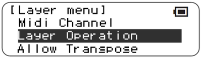
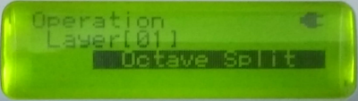
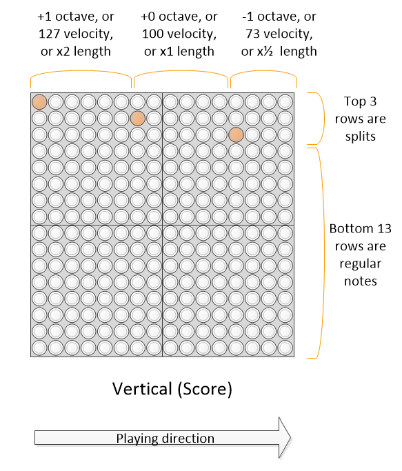
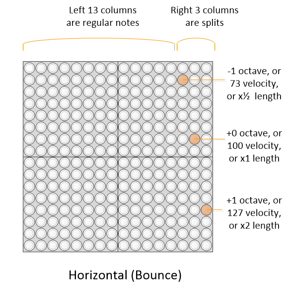
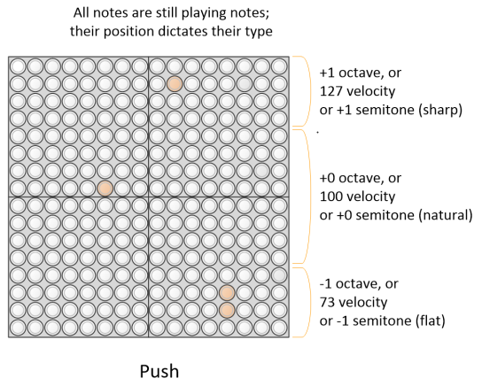

Splits
This function extends all layer modes with a variety of “splits”, providing dynamic changes of octave, velocity, note length, pan, and many others.
Overview
Splits can be applied to instruments, but not to meta controllers or CC layers.
If a split is selected, it acts to sacrifice the top 3 pitched notes of the block, and uses these to select between a number of different modifiers for the notes. Thus the note range is “split” into normal instrument notes (bottom 13) and modifiers (top 3).
The following splits are available
Octave : The played notes can be one octave higher, or one lower, than the selected layer setting.
Velocity (i.e. how hard the note is played). This allows dynamic modification of the note velocity away from the default of 100. This split allows the velocity to be changed per note (from 3 options), allowing, for example, more musically dynamic drums and other effects.
Sound length : this split allows the sound length to be dynamically halved, or doubled
Probability : The probabilistic, or chance, split, provides true randomness to whether notes play.
Offbeat : The offbeat split allows score layers to play repeated or offbeat notes, in each column.
Sharp/flat : The sharp/flat (or accidental) split allows easy sharpening or flattening of notes.
Sustain : The sustain split can be used to emulate the action of the sostenuto and sustain pedals on a piano
Portamento : this turns portamento on/off - although the audio of the TNR does not support portamento, this is meant to support other synths that do.
Modulation : this split adds 50% or 100% modulation to the playing note (similar to using the mod wheel on a keyboard)
Attack time : this split allows the attack time of the note to be increased from the sounds default
Release time : this split allows the attack time of the note to be increased or decreased from the sounds default
Timbre : this split allows the timbre of the sound to be increased from the sounds default
Brightness : this split allows the brightness of the sound to be increased or decreased from the sounds default
Expression (volume) : this split allows the volume of the note to be temporarily reduced similar to the expression controller
Reverb depth : this split allows the reverb depth to be turned off to maximum.
Chorus depth : this split allows the chirus depth to be turned off to maximum.
Conditional play : these splits allow notes to either play or not depending on the block count within a grouping of four - this is explained further below
Echo : where an echo effect is active on the layer, this split allows the echo to be turned on & off on a per note basis, but also the echo buffer to be purged stopping all currently echoing notes
Menu selection
This function is a property of the layer, and is selected under the layer menu.
 |
 |
|---|
Note behaviour
The following table shows the behaviour of the 3 modifier notes in the various splits. The default condition is highlighted in bold.
| Split type | Top note | Middle note | Bottom note |
|---|---|---|---|
| Octave | +1 octave | Default octave | -1 octave |
| Velocity | 127 | 100 | 73 |
| Length | 2x default | Default | 1⁄2 x default |
| Probability | **100% ** | 50% | 25% |
| Pan | Right | Center | Left |
| Offbeat | Double note | Onbeat single note | Offbeat single note |
| Sharp/Flat | +1 semitone | No Change | -1 semitone |
| Sustain | Sostenuto on | No pedals | Sustain on |
| Portamento | On | Off | On |
| Modulation | 100% | 50% | Off |
| Attack time | Maximum | Increased | Normal |
| Release time | Maximum | Normal | Minimum |
| Timbre | Maximum | Increased | Normal |
| Brightness | Maximum | Normal | Minimum |
| Expression | Normal | Quieter | Much quieter |
| Reverb Depth | Maximum | Default | Off |
| Chorus Depth | Maximum | Default | Off |
| Conditionals | All blocks | Fewer blocks | Fewest blocks |
Split layout in layers
For layers where pitch increases vertically - i.e. score, random, draw - the top 3 rows of the TNR adjust the split expression value. For layers where pitch increases horizontally - i.e. bounce - the rightmost 3 rows of the adjust the split expression value. In push mode, the top 1⁄4 of the screen is the “Top” expression value, the bottom 1⁄4 of the grid is the “Bottom” expression value, and the middle 1⁄2 of the grid is the Middle expression value. Currently in solo mode, the split is handled as per bounce mode, but this may change in later releases since this is a particularly inefficient use of grid real estate.
 |
 |
|---|---|
 |
The split modified is retained until the next split modifier, i.e. the split latches. This is easily seen in score mode, and is fun to use in bounce mode, using the bounce to vary the velocity or octave randomly.
In score mode, a split directive in the same column as a note will strictly apply (i.e. before) that note plays. This is required in order to make “chords” in score mode behave predictably. For the other layer types, this has not been enforced, and depends on the order in which the notes were originally entered.
Implementation in different layer types
Not all layer types have all split types implemented. Grid does not have any splits, since it is driven externally.
| Split type | Score ScoreX Life |
Random RandomXY Bounce Draw |
Push | Solo | Abacus | Rain |
|---|---|---|---|---|---|---|
| Octave Sharp/Flat |
Y | Y | Y | Y | Y | Y |
| Velocity | Y | Y | Y | Y | N | Y |
| Length | Y | Y | N | Y | N | Y |
| Probability | Y | Y | N | Y | Y | Y |
| Pan | Y | Y | Y | Y | N | Y |
| Offbeat | Y | N | N | N | N | N |
| Sustain | Y | Y | Y | Y | N | Y |
| Portamento | Y | Y | Y | Y | N | Y |
| Modulation | Y | Y | Y | Y | N | Y |
| Attack Time Release Time Timbre Brightness |
Y | Y | Y | Y | N | Y |
| Expression | Y | Y | Y | Y | N | Y |
| Reverb depth Chorus depth |
Y | Y | Y | Y | N | Y |
| Conditionals | Y | N | N | N | N | N |
| Echo | Y | Y | Y | Y | N | Y |
Compatibility Issues
None known
Releases
First included in A015. Probabilistic/Chance and Pan splits in A028. Offbeat splits in A029. Sharp/Flat in A033. Sustain & Portamento in A035. Modulation, Attack & Release time, Timbre, Brightness, Expression, Reverb & Chorus depth, Conditionals and Echo added in A044